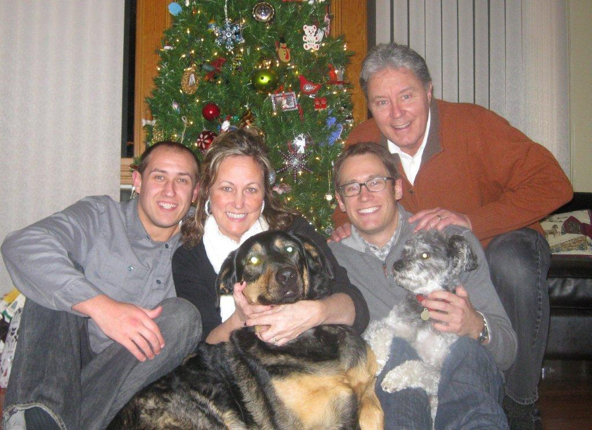

Inger Margrete
K, #60976, f. før 1749
Biografi
| Sist redigert |
10 januar 2011 00:00:00 |
Peder Johannessen
M, #60979, f. før 1825
Biografi
Peder Johannessen ble født før 1825.
| Sist redigert |
12 januar 2011 00:00:00 |
Johannes Johnsen
M, #60980, f. før 1825
Biografi
Johannes Johnsen ble født før 1825.
| Sist redigert |
12 januar 2011 00:00:00 |
Aksel Mejer Kjønsøy
M, #60981, f. 28 november 1910, d. 12 februar 1986
Foreldre
Biografi
Aksel Mejer Kjønsøy ble født den 28 november 1910 på/i Kjønsøy, Vikna, Nord-Trøndelag. Han døde den 12 februar 1986. Han ble gravlagt den 18 februar 1986 på/i Valøy kirkegård, Vikna, Nord-Trøndelag.
Aksel Mejer Kjønsøy ble døpt den 3 september 1911 på/i Vikna, Nord-Trøndelag.
| Sist redigert |
10 juni 2024 17:48:46 |
| Slektskap | 6-menning 1 gang forskjøvet til Håkon Wahl |
Barbara Lynn Kusnierz
K, #60982, f. etter 1952, d. 2003
Familie: Earl Martin Wahl (f. 1952)
| Sønn | Derek Martin Wahl (f. 1979) |
Biografi
Barbara Lynn Kusnierz ble født etter 1952. Hun giftet seg med Earl Martin Wahl. Earl Martin Wahl og hun ble skilt. Hun døde i 2003.
Barbara Lynn Kusnierz was also known as Barbara Lynn Wahl.
| Sist redigert |
16 januar 2011 00:00:00 |
Simon Wahl
M, #60988, f. 9 mai 2002, d. 11 mai 2002
Foreldre
| Far | Lawrence David Wahl (f. 24 oktober 1954) |
| Mor | Donna Pellegrino (f. omtrent 1955) |
Biografi
Simon Wahl ble født den 9 mai 2002. Han døde den 11 mai 2002 på/i Camby, Indianapolis, Indiana, USA.
| Sist redigert |
15 august 2024 15:28:18 |
| Slektskap | 4-menning 1 gang forskjøvet til Håkon Wahl |
Glenn Robert Johnson
M, #60993, f. 20 september 1946, d. 4 september 2020

Kevin Carlson, Joanne Wahl, Ryan Carlson, Glenn Johnson
Biografi
Glenn Robert Johnson ble født den 20 september 1946 på/i Chicago, Illinois, USA. Han giftet seg med Joanne Wahl. Han døde den 4 september 2020 på/i Mercyhealth Hospital and Trauma Center, Janesville, Rock County, Wisconsin, USA.
Glenn Robert Johnson was also known as "Buck" Johnson. He graduated from Carl Schurz High School in 1964 and served in the United States Air Force from 1967-1970. He graduated with a Bachelor of Science from University of Illinois-Chicago in 1972 and an MBA from Roosevelt University in 1976.
| Sist redigert |
9 mars 2025 23:59:59 |
Peter Laurits Olsen Nakstadsvean
M, #60994, f. 13 januar 1847
Biografi
Peter Laurits Olsen Nakstadsvean ble født den 13 januar 1847 på/i Mosvik, Nord-Trøndelag. Han giftet seg med
Anna Martine Samuelsdatter.
| Sist redigert |
22 januar 2011 00:00:00 |
John Olav Loktu
M, #60997, f. 9 juli 1875, d. 20 februar 1951
Foreldre
Biografi
John Olav Loktu ble født den 9 juli 1875 på/i Frosta, Nord-Trøndelag. Han giftet seg med
Emma Olea Iversdatter Hassel. Han døde den 20 februar 1951 på/i Trondheim, Sør-Trøndelag. Han ble gravlagt den 18 mai 1951 på/i Lademoen kirkegård, Trondheim, Sør-Trøndelag.
John Olav Loktu was also known as Jon Olaf Loktu. Han ble døpt hjemme den 18 juli 1875. Han ble døpt den 29 august 1875 på/i Frosta, Nord-Trøndelag.
| Sist redigert |
27 februar 2019 00:00:00 |
Emma Olea Iversdatter Hassel
K, #60998, f. 22 februar 1880, d. 6 januar 1955
Foreldre
Biografi
Emma Olea Iversdatter Hassel ble født den 22 februar 1880 på/i Hylla, Flatanger, Nord-Trøndelag. Hun giftet seg med
John Olav Loktu. Hun døde den 6 januar 1955 på/i Trondheim, Sør-Trøndelag. Hun ble gravlagt den 20 mai 1955 på/i Lademoen kirkegård, Trondheim, Sør-Trøndelag.
Emma Olea Iversdatter Hassel was also known as Emma Olea Loktu. Hun ble døpt den 18 april 1880 på/i Vik, Flatanger, Nord-Trøndelag.
| Sist redigert |
27 februar 2019 00:00:00 |
Iver Olsen Hassel
M, #60999, f. 2 april 1848
Foreldre
Biografi
Iver Olsen Hassel ble født den 2 april 1848 på/i Kvikne. Han giftet seg med
Julianna Olsdatter den 10 juli 1875 på/i Vik, Flatanger, Nord-Trøndelag.
Iver Olsen Hassel bodde i 1900 på/i Aasheim, Voldsminde, Trondheim, Sør-Trøndelag.
| Sist redigert |
25 januar 2011 00:00:00 |
Julianna Olsdatter
K, #61000, f. 2 mars 1841
Foreldre
Biografi
Julianna Olsdatter ble født den 2 mars 1841 på/i Vikna, Nord-Trøndelag. Hun giftet seg med
Iver Olsen Hassel den 10 juli 1875 på/i Vik, Flatanger, Nord-Trøndelag.
Julianna Olsdatter was also known as Julianna Olsen. Hun ble døpt den 8 august 1841 på/i Nærøy, Nord-Trøndelag.
| Sist redigert |
24 januar 2011 00:00:00 |
{kind=link}